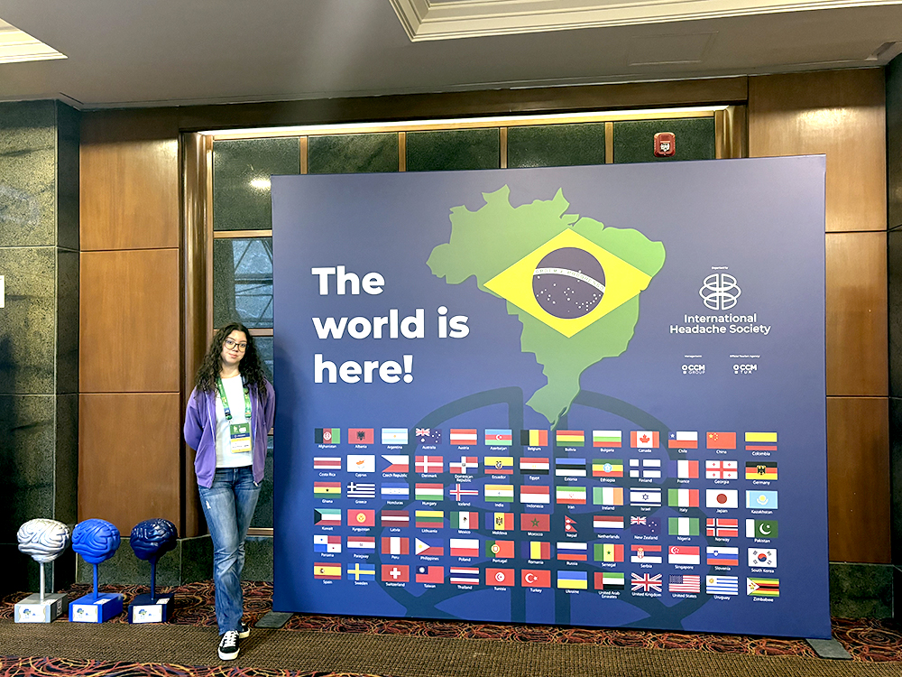
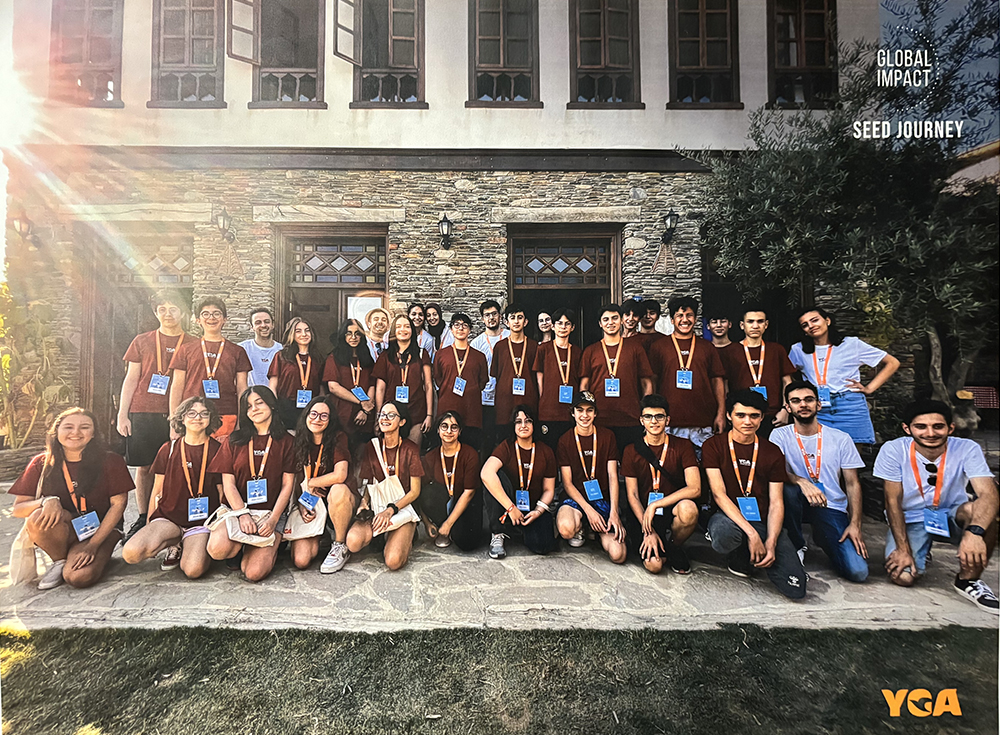

- ozkanmevsim2008@gmail.com
I'm Mevsim Özkan
Education
TED Ankara College
Senior Student | IB Year 2 | Anticipated Graduation: July 2026
- Follow the IB Diploma Programme alongside the Turkish Ministry of Education high school curriculum of the Science-Math track
- IB HL Courses: Mathematics (Analysis and Approaches), Physics, English B
- IB SL Courses: Chemistry, Economics, Turkish A
- AP: Biology (Score: 5, May 2025)
- IB Extended Essay: [English B] “The Role of Environmental Descriptions in William Golding's Lord of the Flies
- Ministry Courses: Biology, History, Philosophy, Spanish, and more
Pearson Education: BTEC International Level 3
Art and Design with Distinction
- Examined how rugs have been depicted in European and Turkish art, what kind of motifs are depicted in Anatolian rug designs, and how rug patterns have influenced fashion and modern art
- Researched the history of graphic design, starting from ancient and medieval examples from Ancient Egyptian hieroglyphs, manuscripts from the European Middle Ages, to Renaissance, Industrial, and post-Industrial eras, with examples from Renaissance book designs to Art Nouveau trends
- Taking historical and modern examples from graphic design history, studied different “logo” designs
- Rugs
- Graphic Design, Logo & Light
-
Made my own portfolio of physical traditional media work inspired by rug, light, and graphic design research
Nova Scotia International Student Program (NSISP)
Freshman Exchange Student (Year 9)
- Attended the Liverpool Regional High School for a month and took the Mathematics, Physical Education, Citizenship Education, English, Technology Education, and Healthy Living classes
- Travelled and lived with my host Canadian family to learn more about their culture
Experience
Hacettepe University
Intern
- Followed a rigorous 10-day multidisciplinary teaching program where I shadowed academicians in the Institute of Neurological Sciences and Psychiatry and the Department of Analytical Chemistry within the Faculty of Pharmacy to gain a better understanding of their roles and their research fields in neuroscience and biology
- Received tutorials from an array of researchers and supervisors in different laboratories on using PubMed and Web of Science to write structured literature reviews, understanding international research databases, ethical sourcing, gaining practical skills in laboratories, such as performing basic analytical chemistry procedures, including solution preparation, calibration/standard curves, and capsule content assay, all under supervision
- Observed an experiment involving tissue sectioning from mice and analyzed data about the concentration of berberine by making calibration curves
- Kept a daily log to prepare a final mini-presentation at the end of the 10-day program detailing my key observations and take‑home messages
- Attended the International Headache Congress (IHC) 2025 in São Paulo, Brazil, to engage with current international research, observe and interview researchers at different career stages about their collaborations, take detailed notes of research from other sources, and assist in the presentation of research from our lab
Academic Enrichment
Middle East Technical University, IPPG & CERN: Hands-On Particle Physics
- Received training from Prof Dr Bilge Demiroz and team to use live data from the Large Hadron Collider (LHC) at CERN in Geneva, Switzerland
- Analysed a dataset of 50 particle collision events using an event display tool called HYPATIA that visually reconstructs what happens inside the ATLAS detector during high-energy collisions
- Presented our analysis with CERN scientists and compared our data with participants from different countries
Sabanci University: Summer High School
- Took the following all-English short university-level classes at Sabanci University:
- Nanoscience and Nanotechnology: Learned about how quantum physics applies on the atomic level for surface effects and electromagnetic and molecular interactions, and how imaging and measurement on the atomic level are necessary for the development of innovative nanotechnologies
- Are We Alone in the Universe: Learned how SETI research uses an interdisciplinary scientific point of view, including astronomical observations, modeling, electromagnetic radiation & spectrum, and extrasolar planetary systems
- Quantum Physics: Studied basic principles of quantum physics and topics such as parallel universes, the Einstein-Podolsky-Rosen paradox, hidden variables, speed of light and quantum mechanics, black holes and closed timelike curves, quantum computers, and quantum phenomena in the brain
- Create Animation and Art on Computer: Used 3D software to produce digital artworks in an art studio
Extracurricular Activities
TED Ankara College Debate Club: Communications Manager
- Assist the management of the Debate Club in maintaining their social media by taking photos, creating posts
- Head communications with other schools' clubs to help organize debate tournaments
TED Ankara College Model United Nations (MUN) Club: Head of Press
- Formed a press team among the members and assigned their work divisions for photograph and video shoots
- Managed the club's social media and PR; shot conference videos and took photographs for posts
TED Ankara College Prague Trip
- Volunteered at homeless shelters, cooking for people and later interviewing them about their life experiences
- Sold magazines called Nový Prostor to raise funds for charity and experience how street-level marketing works
- Learned about urban farming and assisted with clearing a new patch of garden for new plants
- Joined a sustainable design challenge workshop and brainstormed ideas about how to address hunger among the homeless population; designed and presented our idea for a soup kitchen and food bank headed by homeless people in the community for a design challenge competition
Visual Art
- Prepared a presentation and quiz about the central precepts of Buddhism for Religion Day at school in April 2025; designed and applied henna designs on students based on Buddhist art and their interests in it
- Organized with another painter student at school to design a large-scale mural between December 2024 and March 2025; designing and planning the artwork, then dividing it into parts that we could finish with acrylic and careful brushwork
- Created posters about Peruvian culture and important landmarks and monuments, then did a presentation and managed a facepainting booth for the school at the Spanish Day celebration in November 2024
- Travelled to Mexico to learn about its history and culture and attended the Dia de Muertos festival between 30 October and 9 November 2024 to take professional photographs published on the social media pages (YouTube, Instagram) of Fotograf Gezginleri (Photograph Travellers)
- Have had gallery shows for traditional art in establishments like Zeren Art Gallery and Miel's Art since 2018
Other
- Assist the TED Ankara College Theatre Club with their décor, take photographs, and manage their social media in the 2025-2026 academic year
- Perform synchronized ice-skating at competitions and events as a licensed skater with Kentpaten (2023-2026)
- Play the clarinet at school celebrations and other events regularly since 2019
- Organized and prepared a live interview event for the school with the author and poet Aydın Afacan about literary devices, techniques, and the writing process
- Went to cooking workshops to learn recipes to make and sell various food products at school to fund donations for schools in underprivileged villages at TED Ankara College (2023-2025)
- Attended the Seed Journey Summer Camp in Izmir as a Young Guru Academy volunteer member and worked on innovation projects that we later presented to entrepreneurs to solve various modern problems (2022-2023)
Gallery


Skills
Languages
- Turkish (Native)
- English (C1)
- IELTS Academic UKVI 8.0 (Mar 2025)
- IELTS Academic 8.0 (Sep 2024)
- Spanish (Taking B1 classes)
Technical
- Python (Beginner)
- Microsoft Office (Word, Excel, PowerPoint)
Sports
- Ice skating
- Swimming
Interests
- Painting
- Playing the piano and the clarinet